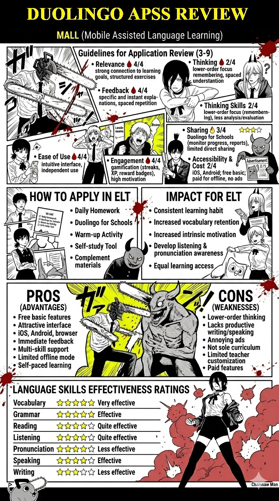

✦ Evaluation
Add your evaluation here — how relevant is Duolingo to the learning objectives and the Indonesian EFL context? Consider the alignment between Duolingo's curriculum and national English learning standards.
An 8-day personal log of using Duolingo on iOS — exploring how gamification shapes the language learning experience.
A quick step-by-step guide to getting started with Duolingo on your iPhone or iPad.

A daily record of using Duolingo on iOS — observations, reflections, and a short video for each session.


An in-depth breakdown of Duolingo iOS across seven evaluation criteria commonly used in EdTech assessment. Each criterion is explored as a standalone article section.
Add your evaluation here — how relevant is Duolingo to the learning objectives and the Indonesian EFL context? Consider the alignment between Duolingo's curriculum and national English learning standards.
Add your evaluation here — how does Duolingo provide feedback to learners? Is it meaningful and timely? Discuss immediate error correction, explanation depth, and whether feedback supports genuine understanding or just answer recall.
Add your evaluation here — does Duolingo promote higher-order thinking, or does it remain at recall and recognition level? Evaluate using Bloom's Taxonomy and consider whether tasks push learners to analyse, synthesise, or evaluate language.
Add your evaluation here — how intuitive and user-friendly is the Duolingo iOS interface for English learners? Consider onboarding experience, navigation clarity, and whether learners of varying tech-literacy can use it without difficulty.
Add your evaluation here — how effectively does Duolingo maintain learner motivation and engagement over time? Analyse the role of streaks, XP, leaderboards, and character notifications in sustaining daily learning behaviour.
Add your evaluation here — does Duolingo support collaborative learning or sharing of progress with peers and teachers? Examine social features, classroom integration options, and whether it facilitates teacher monitoring.
Add your evaluation here — is Duolingo accessible to all learners regardless of device, ability, or economic background? Discuss the free vs. Super Duolingo model, data usage, and offline functionality in the Indonesian context.
The infographic below summarises the key aspects of Duolingo as an EdTech platform evaluated through the Application Rubric Evaluation framework.

Reflective and critical questions situating Duolingo within the broader discourse of English Language Teaching (ELT) theory and practice.
Duolingo can be used in basic English language learning to make the learning process more enjoyable. Elementary and middle school students play a key role in ensuring that Duolingo-based learning in the classroom is more effective. By providing more targeted skills in speaking, writing, and listening, as well as more effective and efficient learning through the implementation of home-based education.
Add your reflection here — measurable and perceived impacts on learner outcomes, motivation, and teaching practices in ELT.
Add your reflection here — key advantages from a pedagogical, technological, and accessibility standpoint.
Add your reflection here — critical limitations in terms of SLA theory, communicative competence, and real-world language use.
Add your reflection here — analyse the four skills (reading, writing, listening, speaking) and sub-skills (vocabulary, grammar, pronunciation) supported by Duolingo.
Panduan langkah demi langkah untuk memulai Duolingo di iPhone atau iPad kamu.
Catatan harian penggunaan Duolingo di iOS — observasi, refleksi, dan video singkat setiap sesi.
Penjabaran mendalam Duolingo iOS berdasarkan tujuh kriteria evaluasi yang umum digunakan dalam penilaian EdTech. Setiap kriteria dipaparkan sebagai bagian artikel tersendiri.
Isi evaluasimu di sini — seberapa relevan Duolingo dengan tujuan pembelajaran dan konteks EFL Indonesia?
Isi evaluasimu di sini — bagaimana Duolingo memberikan umpan balik kepada pelajar? Apakah bermakna dan tepat waktu?
Isi evaluasimu di sini — apakah Duolingo mendorong berpikir tingkat tinggi, atau hanya sebatas ingatan dan pengenalan?
Isi evaluasimu di sini — seberapa intuitif dan mudah digunakan antarmuka Duolingo iOS bagi pelajar Bahasa Inggris?
Isi evaluasimu di sini — seberapa efektif Duolingo mempertahankan motivasi dan keterlibatan pelajar dari waktu ke waktu?
Isi evaluasimu di sini — apakah Duolingo mendukung pembelajaran kolaboratif atau berbagi kemajuan dengan teman dan guru?
Isi evaluasimu di sini — apakah Duolingo dapat diakses semua pelajar tanpa memandang perangkat, kemampuan, atau latar belakang ekonomi?
Infografis di bawah ini merangkum aspek-aspek utama Duolingo sebagai platform EdTech yang dievaluasi menggunakan kerangka Application Rubric Evaluation.
Pertanyaan reflektif dan kritis yang menempatkan Duolingo dalam wacana yang lebih luas tentang teori dan praktik Pengajaran Bahasa Inggris (ELT).
Duolingo dapat diterapkan dalam pembelajaran dasar bahasa Inggris terkait dengan pembelajaran menyenangkan. Anak dari sekolah Dasar dan Sekolah Menengah Pertama menjadi salah satu bagian utama dari bagaimana pembelajaran duolingo di dalam kelas bisa berjalan dengan lebih efektif. Dengan memberikan kemampuan meliputi Speaking, Writing, dan Listening yang lebih terarah dan kemampuan pembelajaran yang lebih efektif dan efisien dengan penerapan pendidikan rumahan.
Isi refleksimu di sini.
Isi refleksimu di sini.
Isi refleksimu di sini.
Isi refleksimu di sini.